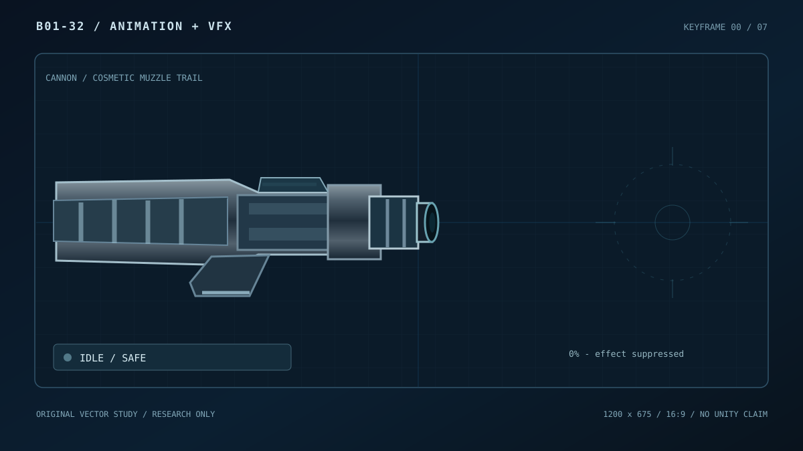

Eight original 16:9 SVG keyframes. Toggle live preview or inspect each independently. No shader, particles, engine, hitbox or recoil are implemented.

Keyboard: Space play/pause, ←/→ step. VFX OFF sets the standalone inactive frame and stops playback. External SVG frame files can be opened directly and rasterized with CairoSVG.
Art direction: dark steel barrel, cyan-white discharge, staged ignition→peak→trail→clear. The beam's gameplay telegraph is intentionally out of scope. Not integrated into the Unity game.